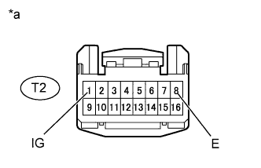

AIR CONDITIONING SYSTEM > Rear Air Conditioning Control Panel Circuit |
| 1.CHECK HARNESS AND CONNECTOR (NO. 2 AIR CONDITIONING CONTROL - AIR CONDITIONING AMPLIFIER) |
Disconnect the G12 amplifier connector.
Disconnect the T2 control connector.
Measure the resistance according to the value(s) in the table below.
| Tester Connection | Condition | Specified Condition |
| T2-6 (RLIN) - G12-13 (RLIN) | Always | Below 1 Ω |
| T2-6 (RLIN) - Body ground | Always | 10 kΩ or higher |
|
| ||||
| OK | |
| 2.CHECK HARNESS AND CONNECTOR (NO. 2 AIR CONDITIONING CONTROL - BATTERY AND BODY GROUND) |
|  |
Disconnect the T2 control connector.
Measure the voltage according to the value(s) in the table below.
| Tester Connection | Switch Condition | Specified Condition |
| T2-1 (IG) - T2-8 (E) | Engine switch off | Below 1 V |
| T2-1 (IG) - T2-8 (E) | Engine switch on (IG) | 11 to 14 V |
Measure the resistance according to the value(s) in the table below.
| Tester Connection | Condition | Specified Condition |
| T2-8 (E) - Body ground | Always | Below 1 Ω |
| *a | Front view of wire harness connector (to No. 2 Air Conditioning Control Assembly) |
|
| ||||
| OK | |
| 3.REPLACE NO. 2 AIR CONDITIONING CONTROL ASSEMBLY |
Replace the No. 2 air conditioning control assembly with a new or normally functioning one (Click here).
Operate the No. 2 air conditioning control assembly to check that it functions properly.
|
| ||||
| OK | ||
| ||